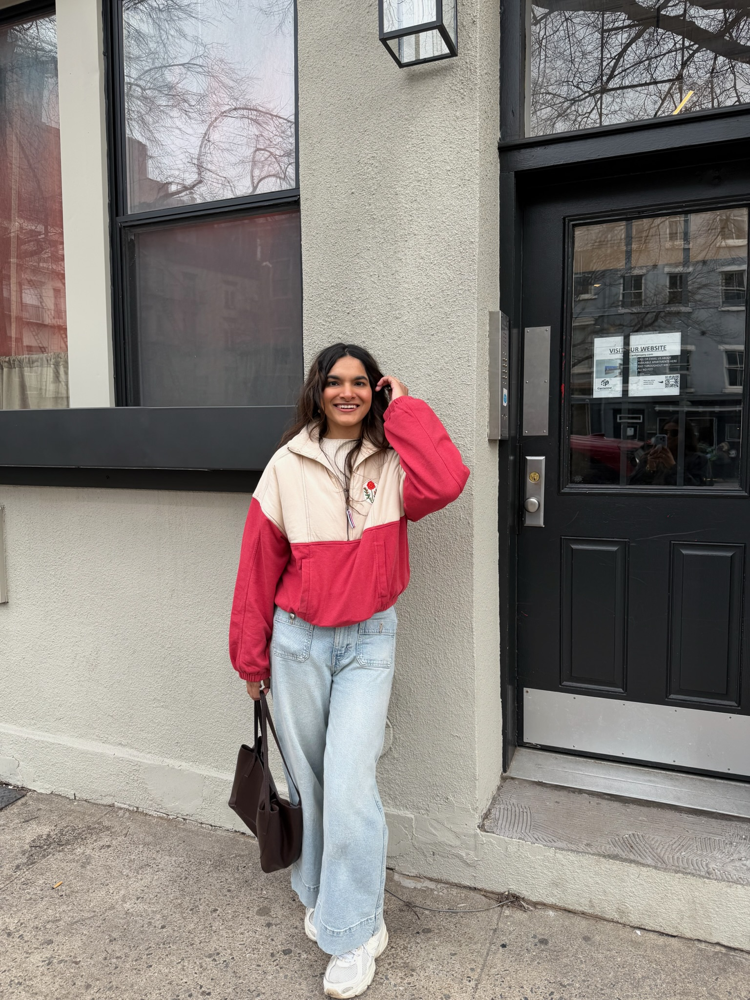

4C Media Hub / 4C Radio
Design and technical team leadership, podcast and media production.
01 / ABOUT ME
I am a media and communication postgraduate with interests spanning design, research, visual storytelling and digital media.
My academic journey connects media, economics and political science with creative practice. I am interested in how communication shapes our understanding of society, politics and culture.
Alongside my academic work, I have contributed to design and technical teams, media projects, campaign development and conference organisation. This portfolio brings together selected projects from these experiences.

Design and technical team leadership, podcast and media production.
Project support, documentation and communication.
Contributed to AI-driven user experience by analysing search intent and training multilingual datasets.
MSc Interactive Digital Media.
MA Media and Communication, Advertising and Corporate Communication.
BA Media, Economics and Political Science.
CURRICULUM VITAE
Open my CV for more details about my experience and education.